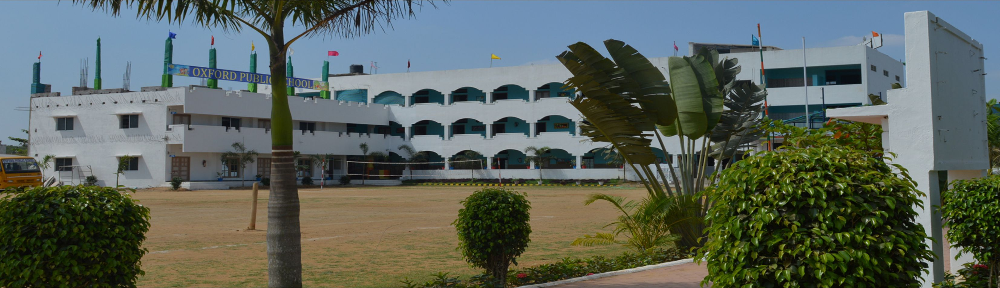
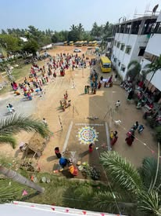

My school

Oxford Public School NSK Nagar, Kosavanpalayam, Thiruninravur - 602024, , established in 2013, is one of the educational institution which was started Kothai Anand Educational Trust. It is a progressive school based on Indian thought, culture, tradition and the educational ideas of world system.
School Vision
We recognize that every child is different, and has different talents and needs. In order to ensure that every student has the best possible opportunities during ther time at the Academy, and that no child is left behind, ever, we deliver a fully rounded education that not only ensure academic success, but also life-enriching and transformational visits, clubs, teams and extra-curricular activities to be the best that we can be!
School Aim
To enable every child to reach their potential in an environment that fosters learning, respect, responsibility, laughter and friendship. Our school is a non-communal, non-sectarian institution which places emphasis on the permanent values of life as enunciated by ancient and modern thinkers.
education
The school is affiliated to the Central Board of Secondary Education, New Delhi. It prepares students for the All India Secondary School (Class X, XI and XII) Examinations.
Activities
The school offers various activities to students in order to excel in various competencies viz. Dance, Music-Vocal and Instrumental, Roller Skating, Yoga and Meditation, Table Tennis, Robotics (Competitions Nation wide)
Co-Scholastic
Drama, Art and Craft, Public Speaking, Gardening, Debate on hot topics.
Games
Chess, Badminton, Carom, Athletics, Volleyball, Kho-Kho, Football, Kungfu, Dance and Silambatam.
Clubs in the School
School clubs are student based committees functioning with myriads of tasks, varying on the specific function of each respective club. Students based clubs offer a special element, every person within the club share a common desire, common ability, looking to find their respective niche in school dynamics. Under the guidance of able and enthusiastic teachers our clubs serve as a platform for students to prove themselves in various fields other than academics.
Literary Club: Fosters and Encourages interest on literary activities.
Science Club: Stands for ‘Programme for Environmental understanding and Science development skill’.
Maths Club: Brings out potential talents of the students.
Heritage Club: Brings awareness in students about heritage sites. Making children aware of their health through exercise and nutritional food.
Sports club : Indulges sports activity and fitness programme. Adolescent Education Programme for Grades X, XI, XII: Imparts accurate and adequate knowledge about the process of growing up with a focus on reproductive and sexual health.
gallary
"